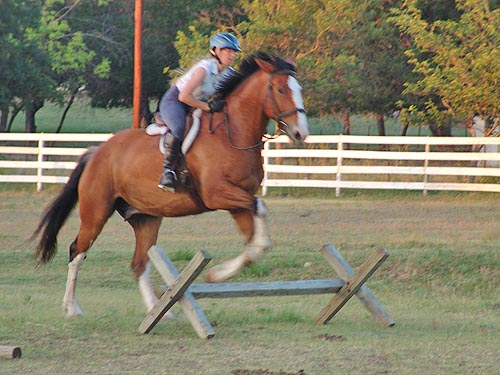

Kanuk - Training I figured it was time to see how we did
in the
jumping saddle. I'm not sure that I'll
have the nerve
to event or even fox hunt with him, but
there's always
the chance he will. So, I may as well
introduce him to
jumping now.
Luckily he likes my Ortho-flex jumping
saddle (not all horses
do). I was also pleased that I didn't
feel insecure changing from
the dressage saddle. I'm sure I was looser,
but Kanuk didn't mind.
Hopefully I can get some ground help to
remind me about shoulders,
heels, elbows and all the things I forget
about when I'm concentrating
on what the horse is doing (also to set
up some real jumps, so we
can progress under supervision).
I've been so excited about how our dressage
work is going that I
wasn't really looking forward to the jumping
stuff. After tonight it's a
real toss up which is more fun. Now I
don't know if I'd rather take
Moe (who I also jumped for the first time
this week) or Kanuk,
to the first cross country schooling this
fall.
I don't bother with the lunge much,
but today I thought I'd try out the Ortho-flex saddle on Kanuk.
Asking him to reach out a bit. I've
had a few horses who hated this saddle. They let me know on the lunge,
so now I always lunge in it first to see what the horse thinks.
Stretching down and not worried about
the saddle. He's all wet, because I soaked him before we got started.
And a canter to be sure.
Not my favorite jumping saddle, but
I'm comfortable in it and it forms to the horse's back. The sweat marks
are always perfect when this saddle comes off.
Shorter legs than in the dressage
saddle, but he still has to listen when I ask for bend.
I didn't have the thigh pain in this
saddle that I do in my dressage saddle. I don't feel as tight, either,
but he is so honestly forward that I never worried about it.
Asking and getting a little leg yield
at the trot. He needs a lot of finishing, but we're obviously communicating.
Introducing him to the cavalletti.
He thought going around would be better, but was sensible when I said no.
We circled at a trot over the pole
on one side and the cavalletti on the other.
When he offered a jump, I tried to
slip the reins and give him his head.
A walk break in between. It was very
hot out.
We raised it up a notch and he gave
a little more jump.
Trotting around and around he would
start to bend to the outside to cut the corners. I worked to be very deliberate
and demanded that he keep the bend in the right direction.
By this time he was doing the circle
by himself and aiming for the pole and the jump.
Getting ready for some canter work.
He was dry from the original hosing and starting to get damp from sweat.
We don't always get the left lead
canter on our first try. With the different saddle we had no trouble getting
the transition when I asked, but the first try was the wrong lead. I tried
to position myself better to be clear about what I was asking for. I think
that helped.
I was pleased with how the canter
felt. He was in the bridle and not fussy.
Of course I need to remember to sit up
and bring my leg back under me. But, by this time I was pretty tired and
just sitting up there like a bump.
After the canter, he was really ready
to jump. When I'm working on dressage, I always forget how much jumping
helps strengthen the back end. Here this is much more a jump, and not just
a stride (I like how his back feet are together pushing off).
I also liked his trot after the canter
work.
(yes, by this time my mouth was always
open trying to get some air)

A final nice jump. No canter away,
but a stride before, when I put my leg on I felt him ask if I wanted a
canter. I half halted and told him to stay in a trot this time.